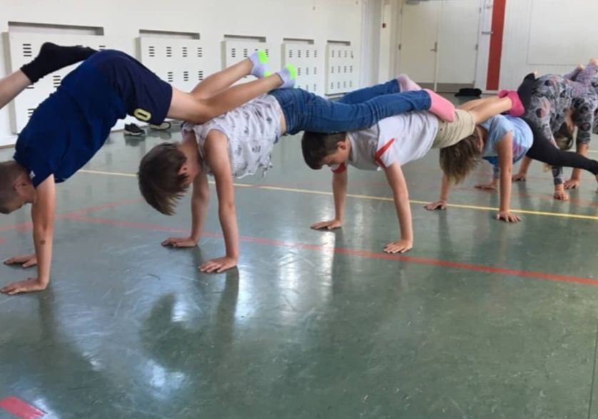
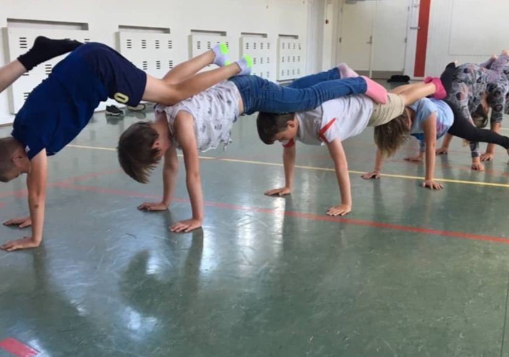
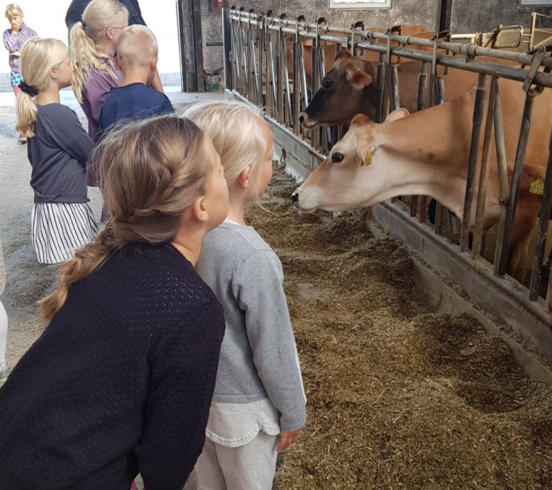
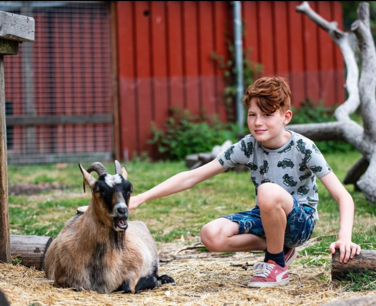
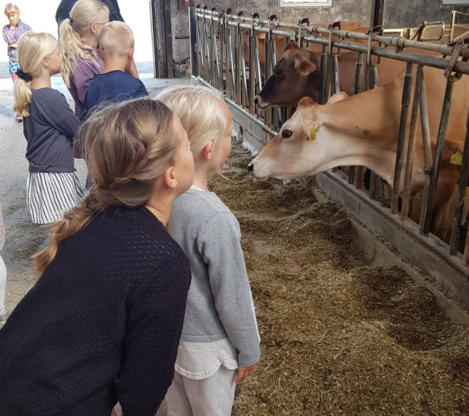
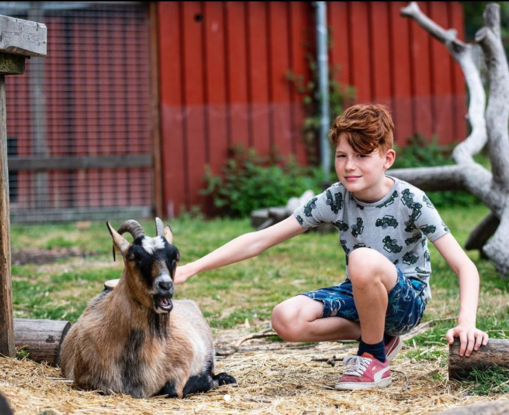

Børn og unge får viden om sund mad, kost og motion på en sjov, lærerig og aktiverende måde, så børnene har lyst til at fortsætte det, de har lært, når Madskolen slutter.
Madskoler foregår i dagtimerne, hvor børn og unge bruger en uge af deres skoleferie på at lave mad, lære om kost og dyrke motion. Der bliver også tid til at lege, tage på ekskursion og tilberede maden til et festligt arrangement for forældrene.
Det præcise tidsrum, de enkelte Madskoler afholdes, besluttes af de frivillige instruktører. Langt de fleste Madskoler afholdes mandag til torsdag fra kl. 9.00 til kl. 15.30 og fredag fra kl. 9.00-14.30. Hertil kommer familiearrangementet, der typisk afholdes torsdag eller fredag aften / eftermiddag
 



Målet med ekskursionerne er, at børnene oplever fødevarer i kæden fra jord til bord. En ekskursion går som regel til en dansk jordbrugs- og/eller fødevarevirksomhed. Det kan være et landbrug, en større kantine, en fødevarefabrik, et grønttorv eller lignende.